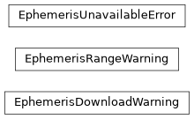

ssapy.ephemeris
Planetary ephemeris selection and long-span kernels.
SSAPy evaluates Sun, Moon and planet positions from JPL development
ephemerides (DE). The ssa-data-* packages ship the supported kernels:
Ephemeris |
Shipped kernel |
Coverage |
|---|---|---|
|
|
1849-12-26 to 2150-01-22 |
|
|
1900-01-01 to 2150-01-01 |
DE440 is the default. Select DE430, for example to reproduce results made
with SSAPy <= 1.1.10, with set_planetary_ephemeris() or the
SSAPY_EPHEMERIS environment variable.
For epochs outside the shipped kernel, SSAPy uses a longer kernel of the same
ephemeris (de440.bsp or de430.bsp, 1550-2650) and, for DE440 beyond
that, DE441 (-13200 to +17191). These are 120 MB to 1.65 GB, so they are not
shipped: SSAPy looks for them in the working directory, the ssa-data-* packages,
and the cache directory, and otherwise downloads them from NAIF, checks their
SHA-256, and caches them, warning with EphemerisDownloadWarning
before each download. Set SSAPY_EPHEMERIS_DOWNLOAD=0 to forbid downloads
(e.g. on compute nodes without network access; prefetch on a login node with
fetch()) and SSAPY_DATA_CACHE to choose the cache directory.
The shipped and long kernels of one ephemeris hold the same solution, so
positions are continuous where SSAPy switches between them. DE441 is a
different solution from DE440 (no lunar core-mantle damping; less accurate
in the current century), so using it raises EphemerisRangeWarning.
Functions
|
Select the planetary ephemeris, |
Name of the selected planetary ephemeris. |
|
|
Download (if needed) the long-span kernels of an ephemeris and return their paths. |
Directory where downloaded kernels are kept ( |
Classes
A long-span ephemeris kernel is being downloaded. |
|
An epoch is evaluated with a different solution than the one selected. |
|
No kernel of the selected ephemeris covers the requested epoch. |
Class Inheritance Diagram
